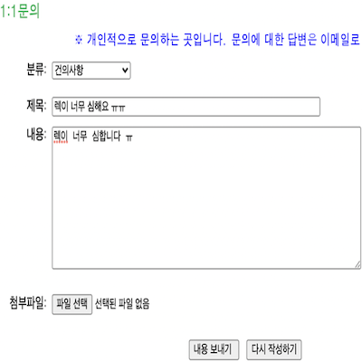

구현 기능

|
소닉 캐릭터 조회 기능 소닉 캐릭터에 대한 정보를 조회할 수 있습니다. 그리고 소닉 게임에 대한 정보도 조회할 수 있습니다. |

|
로그인 및 회원가입 기능 홈페이지에 로그인할 수 있습니다. 아직 회원이 아니면 회원가입 할 수 있습니다. |
|  |
1:1 문의 or 건의 기능 관리자한테 개인적인 문의 or 건의도 가능합니다. 이 내용은 관리자의 이메일로 전송됩니다. |
배경과 목적
요즘 기업마다 존재하는 것이 바로 홈페이지 입니다. 이렇게 웹 개발자가 될 것에 대비해서 기초를 다지기 위해 저만의 홈페이지를 구현하였습니다.
요즘 기업마다 존재하는 것이 바로 홈페이지 입니다. 이렇게 웹 개발자가 될 것에 대비해서 기초를 다지기 위해 저만의 홈페이지를 구현하였습니다.
배운 점
- 웹페이지에서 HTTP Request를 보내는 법과, GET과 POST의 차이를 알게 되었습니다.
- JSP, CSS, JavaScript로 웹페이지를 구현하는 법을 알게 되었습니다.
- Java에서 Transport로 SMTP를 이용해서 메일을 전송하는 법과, SMTP, POP3, IMAP의 차이를 알게 되었습니다.
- Java와 Servlet으로 웹 서버를 구축하는 법과 MySQL로 데이터베이스를 구축해서 JDBC로 연동하는 법을 알게 되었습니다.
진행 절차
- 기존 홈페이지에 필요 없는 기능이 생각보다 많아서 제거하였습니다.
- Java와 Servlet으로 웹서버를 구축하였고, MySQL과 JDBC로 데이터베이스를 구축한 후 연동하였습니다.
- 회원가입, 로그인, 1:1문의 시 웹서버로 submit이 되도록 수정하였고, 예제 코드를 보면서 구현하였습니다.
- 전체적으로 잘 구현하였으나, 소닉 게임을 조회할 때 10개씩 나오게 하려고 했으나 에러 메시지가 떴습니다.
- 구현한 코드를 면밀히 확인하고 고민한 끝에, 10개씩 나오도록 구현할 수 있었습니다.
- 1:1문의 시 웹서버에서 Transport와 SMTP를 사용해서 운영자의 이메일로 내용이 전송되도록 하였습니다.
- 이렇게 해서 원하는 프로그램을 구현할 수 있었습니다.
역량 강화를 위해 가장 노력한 점
JSP&Servlet으로 홈페이지 구현, 웹 서버 구축 및 데이터베이스(MySQL)와 연동
JSP&Servlet으로 홈페이지 구현, 웹 서버 구축 및 데이터베이스(MySQL)와 연동
전체 구조

사용 기술
JSP, CSS, JavaScript, Java, Servlet, HTTP, MySQL
JSP, CSS, JavaScript, Java, Servlet, HTTP, MySQL
개발 환경
Eclipse IDE, PHPMyAdmin
Eclipse IDE, PHPMyAdmin
부연 설명
- 기존 홈페이지는 나모웹에디터를 사용하였고 교양 과목 웹디자인 과제로 제출하였습니다.
- 소스 코드